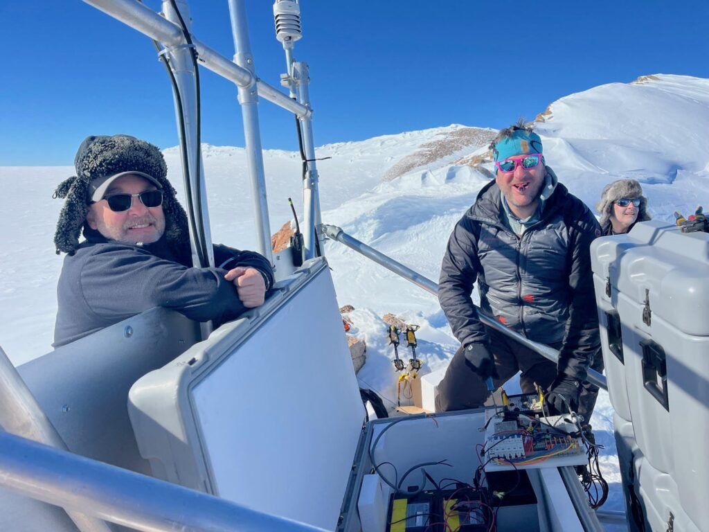

Back to all sites
Whitmore Mountains
| Station ID | WHTM |
|---|---|
| Coordinates | S 82.6832, W 104.393 |
| Installed | 2009-2010 season |
| Former Projects | WAGN |
| Former Names | W09B |
| Transportation | Twin Otter/Basler |
| Nearest Hub | 383km to WAIS |

Coordinate: S 82.6832, W 104.393
Transportation: Twin Otter/Basler
Closest operations HUB: 383km to WAIS
An isolated group of mountains in West Antarctica, consisting of three mountains and a cluster of nunataks extending over 15 miles. The group was visited and surveyed on Jan. 2, 1959, by William H. Chapman, cartographer with the Horlick Mountains Traverse Party (1958-59). Named by Chapman for George D. Whitmore, Chief Topographic Engineer, USGS, who was a member of the Working Group on Cartography of the Scientific Committee on Antarctic Research (https://data.aad.gov.au/aadc/gaz/scar/display_name.cfm?gaz_id=133658).